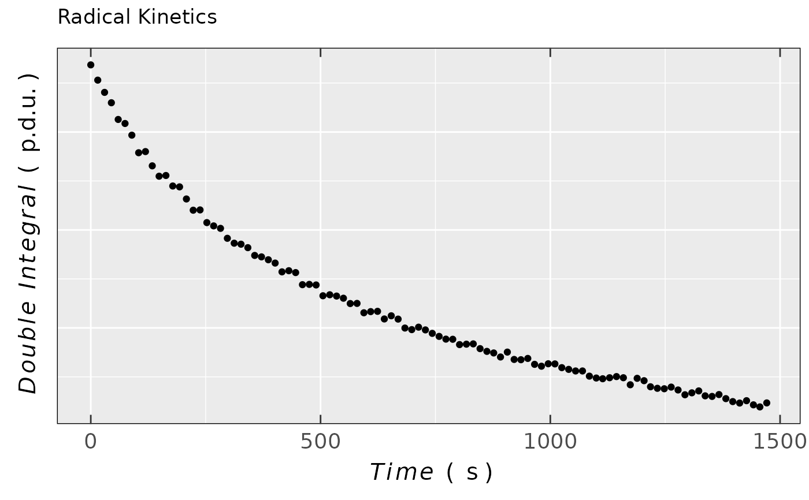

Labels for Various Plots (Spectroscopy, EPR, Voltammetry,...etc)
Source:R/plot_labels_xyz.R
plot_labels_xyz.RdUsing physico-chemical notation of quantities or formulas (labels and titles with greek symbols,
subscript and superscript...etc) in static plots. The function is inspired by the
R-Bloggers:Math Notation
and R-Bloggers:Plotmath,
in order to simplify the writing. See also plotmath documentation or in console
write ?plotmath.
Arguments
- quantity
Variable string without quotation (some parts of the expression can be however quoted, see examples below), corresponding to physical quantity, which should be displayed as the (axis) title like \(B\), d\(I_{EPR}\)/d\(B\), \(time\), \(\Delta B_{pp}\), Double Integral...etc.
- unit
Variable String without quotation (some parts of the expression can be however quoted, see examples below) referring to displayed physical quantity unit, like
mT,s,p.d.u., ...etc.- user.defined
Logical, in order to bring more flexibility to customize quantities and units to meet the users needs. Default:
user.defined = FALSE.
See also
Other Visualizations and Graphics:
draw_molecule_by_rcdk(),
plot_EPR_Specs(),
plot_EPR_Specs2D_interact(),
plot_EPR_Specs3D_interact(),
plot_EPR_Specs_integ(),
plot_EPR_present_interact(),
plot_layout2D_interact(),
plot_theme_In_ticks(),
plot_theme_NoY_ticks(),
plot_theme_Out_ticks(),
present_EPR_Sim_Spec()
Examples
if (FALSE) { # \dontrun{
## magnetic flux density
plot_labels_xyz(B,mT)
#
## derivative intensity
plot_labels_xyz(d*italic(I)[EPR]~"/"~d*italic(B),
"("~p.d.u.~")",
user.defined = TRUE)
#
## derivative intesity
plot_labels_xyz(d*italic(I)[EPR]~"/"~d*italic(B),p.d.u.)
#
## ∆Bpp
plot_labels_xyz(quantity = Delta*B[pp],
unit = "("~mT~")",
user.defined = TRUE)
#
## time
plot_labels_xyz(t,s)
#
## temperature
plot_labels_xyz(T,K)
#
## electrochemical potential
plot_labels_xyz(E,
"("~V~")"~~~italic(vs)~~~italic(Ref.~Electrode),
user.defined = TRUE)
#
## concentration
plot_labels_xyz(c,mmol~dm^-3)
#
## double integral
plot_labels_xyz(Double~~Integral,
p.d.u.,
user.defined = FALSE)
#
## ENDOR frequency
plot_labels_xyz(italic(nu)[RF],"("~MHz~")",
user.defined = TRUE)
} # }
#
## loading example data (incl. `Area` and `time`
## variables) from Xenon: decay of a triarylamine
## radical cation after its generation
## by electrochemical oxidation
triaryl_radCat_path <-
load_data_example(file =
"Triarylamine_radCat_decay_a.txt")
## corresponding data (double integrated EPR
## spectrum = `Area` vs `time`)
triaryl_radCat_data <-
readEPR_Exp_Specs(triaryl_radCat_path,
header = TRUE,
fill = TRUE,
select = c(3,7),
col.names = c("time_s","Area"),
x.unit = "s",
x.id = 1,
Intensity.id = 2,
qValue = 1700,
data.structure = "others") %>%
na.omit()
#
## simple plot of previous data using
## `plot_labels_xyz()`
ggplot2::ggplot(data = triaryl_radCat_data) +
ggplot2::geom_point(
ggplot2::aes(x = time_s,y = Area)
) +
ggplot2::labs(title = "Radical Kinetics",
x = plot_labels_xyz(Time,s),
y = plot_labels_xyz(Double~~Integral,p.d.u.)) +
plot_theme_NoY_ticks()
